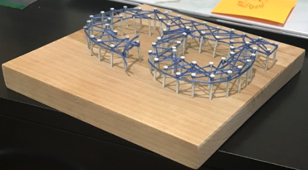

At Pinned, we care about making beautiful decorations that you can customize. We want to make customers and investors as happy as possible by having quick and low cost products, while still maintaining a high quality, fun, and cute decorative item. We take heart in our work, as shown from our tags. We have deep cares for customers, investors, and future team members. Scroll down to learn more.
A – There are many things that make Pinned stand out from other companies. Within seventh grade entre, we are the only team doing decorations with letters and symbols. Uniquely from Pinned are the inspirational quote tags. When people buy our products, we want to give them something more than a pin board. Especially during the pandemic, everyone could use a bit more inspiration. So we put a variety of inspirational quotes on all of our products to make people feel happier.
A – Our main motivation for this choice was that it was unique and would be fun to make. Because we are the only team doing this kind of decoration, it means that we have the benefit of low competition, and more customers buying our products specifically.
A – Pinned is based on helping customers be happy. Not just giving customers exactly hat they want, but inspiring them to feel a little happier, or motivated to accomplish a goal. We also care about ideas. If someone on the team has an idea or an opinion, it will be thought over, and never shot down. You can count on being happy and motivated as a customer, investor, or team member.